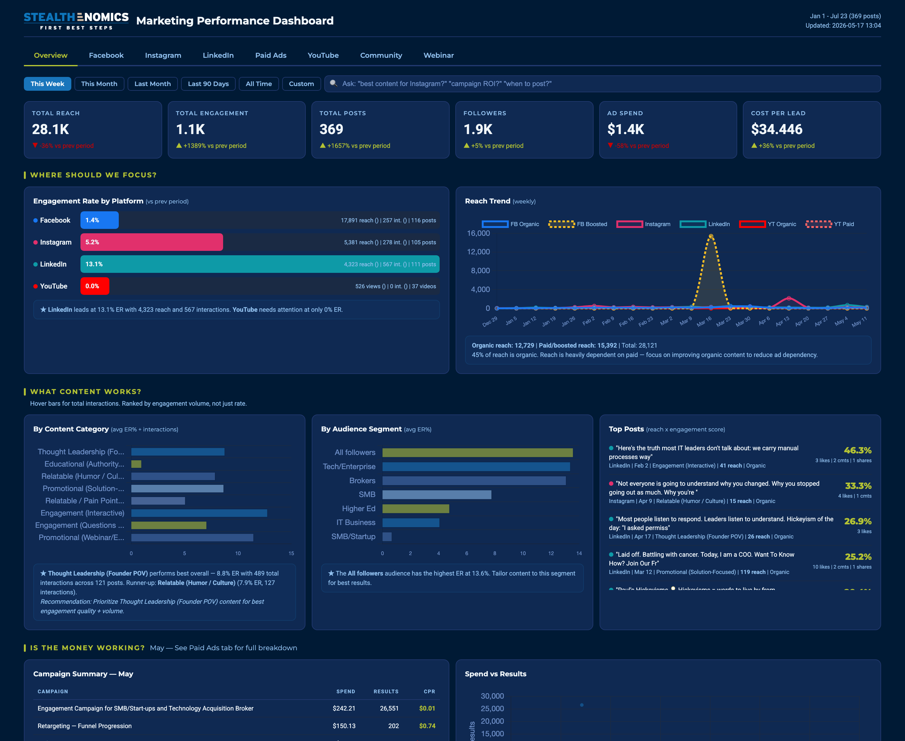

Automated Live Marketing Dashboard Across Ads, Social and Video
An education brand was reading its performance across Meta Ads, Instagram, Facebook and YouTube by hand, in four different places, days after the fact. Reporting consumed hours every week and decisions consistently arrived late, after the money had already been spent.

What we built
We built a single live dashboard that pulls directly from the Meta Ads, Instagram Graph and YouTube APIs on an automated schedule, authenticated with a system user so it never breaks or needs someone to log back in. The overview was rebuilt as a status board rather than a wall of numbers: a campaign scoreboard, channel health at a glance, automatic flags on what needs attention, and a working date-range filter so any period can be compared without exporting anything. Ads, organic and video data all land in one view tied back to the same goals.
Reporting went from hours of manual assembly to always current. The team opens one page and immediately sees what is working, what is slipping and where the budget should move next.
Inside the project
